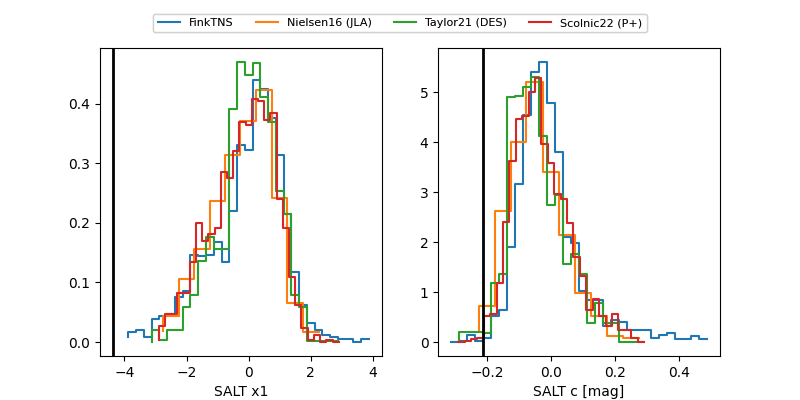

FINK: ZTF25abqiwtn
Lasair: ZTF25abqiwtn
ALeRCE: ZTF25abqiwtn
ZTF25abqiwtn (ztf,fink)
equatorial (ra, dec) = (275.4943,+34.64208)
galactic (l, b) = (62.2288,+20.67506)

last ztfg=19.90, ztfr=20.09
3 ztfg, 3 ztfr detections